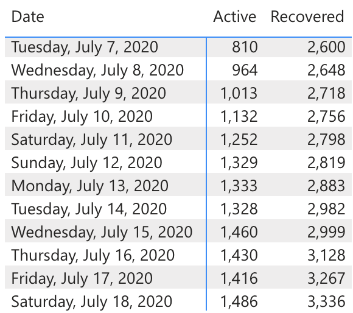
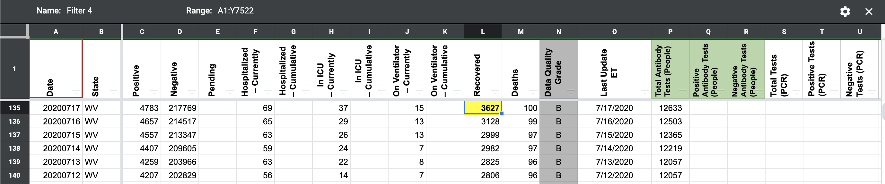
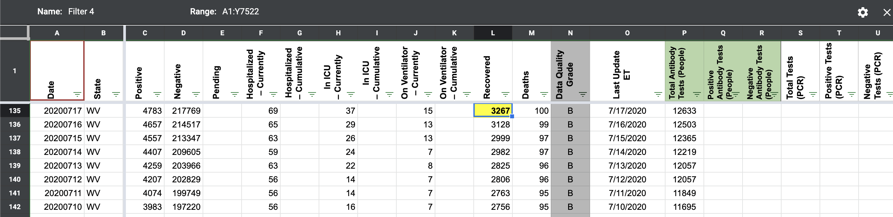

[WV] 7/17 Recoveries
Issue number 646
brianskli opened this issue on July 18, 2020 at 1:48 pm
Transposition issue on 7/17 recovery count from WV, resulting in red cell on 7/18
brianskli added the label Data quality on July 18, 2020 at 1:48 pm
brianskli removed the label Data quality on July 18, 2020 at 1:48 pm
brianskli closed the issue on July 18, 2020 at 2:04 pm
Noting that secondary and tertiary screenshots are broken. Correct number acquired through data graph on WV state website:  Number switched from 3627 to 3267. Before:  After: 